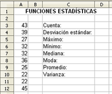

Hojas de cálculo
4.5. Funciones Estadísticas
Las funciones estadísticas suponen una potente herramienta de las hojas de cálculo. En concreto, OpenOffice.org Calc contiene ochenta funciones en esta categoría.
| CONTAR (rango) | Averigua el número de celdas del rango que contienen valores numéricos. |
| PROMEDIO (rango) | Calcula la media aritmética de los valores del rango. |
| MEDIANA (rango) | Calcula la mediana o punto medio de un conjunto de valores. |
| MIN (rango) | Calcula el valor mínimo de los números del rango. |
| MAX (rango) | Calcula el valor máximo de los números del rango. |
Ejercicio resuelto
Copia la siguiente lista de número y realiza los siguientes cálculos estadísticos:

- Cuenta los números.
- La desviación estándar.
- El número máximo.
- El número mínimo.
- La mediana.
- La moda.
- El promedio.
- La varianza.
Aunque son cálculos sencillos, te servirán para conocer las funciones de esta categoría y familiarizarte con ellas.
Comprueba lo aprendido
Si has realizado el ejercicio anterior, conocerás la solución de los cálculos.
Obra publicada con Licencia Creative Commons Reconocimiento No comercial Compartir igual 4.0